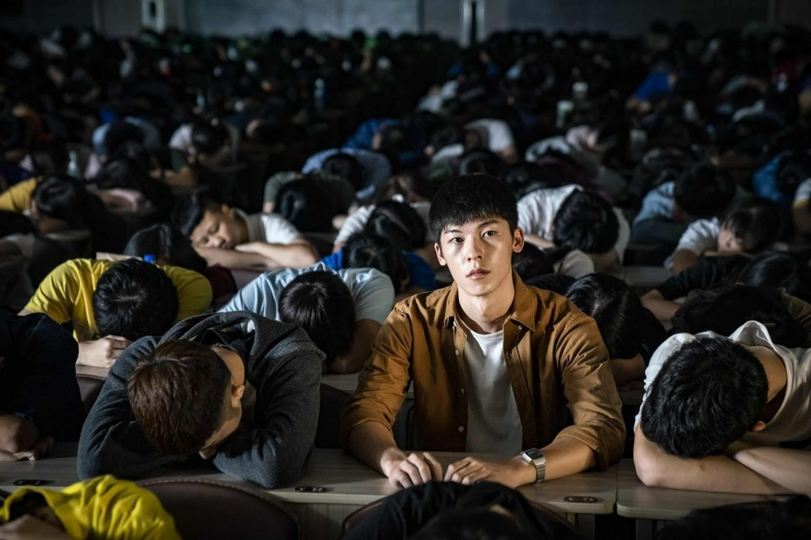
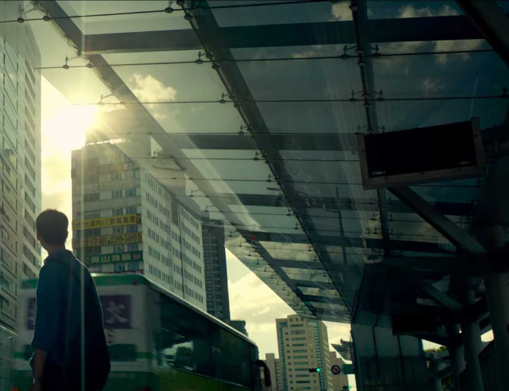

司马光砸开的缸里，躲着另一个自己
大家好，我是 Chester，我想成为更好的自己！
<

,,,
>「人一旦开始躲藏，就很难停下来了。」——《阳光普照》
几年前，我正处于一段迷茫期，偶然搜到了这部电影。它温暖、清新，节奏像日剧一样克制。
但有一个问题一直卡在我心里：阿豪——那个在外人眼中无可挑剔、几乎完美的少年，为什么选择了自杀？
他阳光、优秀、懂事，是所有人眼里的好孩子。我看了很多解说，疑惑却始终没有完全消解。
一个看起来拥有一切的人，为什么会对世界说「再见」？
直到我读到袁哲生。
司马光砸缸的故事我们都熟——孩子落水，司马光砸缸救人，机智勇敢。但袁哲生把它改写成了另一个版本：
一群孩子在庭院里捉迷藏。司马光当鬼，把所有人都找到了，却坚持说还有一个人没找到。没有人相信他，他砸开了那口大缸——缸里蹲着的，是一个和司马光长得一模一样的孩子。
他自己称它为「一个脆弱的故事」，一个「单调、无趣」却被小心翼翼收藏起来的故事。
当司马光砸开缸，他看见的不是别人——是另一个自己。
阿豪就是那个被所有人看见、却从没有人看见他内心的人。
他活得像太阳一样明亮，可太阳没有影子。一个人如果只能活在阳光下，他就失去了躲藏的权利。
「人一旦开始躲藏就很难停下来」——这句话反过来问：一个从来不被允许躲藏的人，会怎样？
那些看起来最完美的人，可能正无处可逃。
读完袁哲生，我仿佛站在了司马光面前：他躲在缸里，而我，是那个无意打扰他的旁观者。
我开始重新理解阿豪，也重新理解身边那些「什么都好」的人。我们夸他优秀、懂事、省心——却从没问过他，累不累，有没有什么地方可以躲一躲。
阳光不是全部的真相。允许阴影存在，才是完整的看见。
俗到极致即为雅，雅得过头便是俗——是谓雅俗共赏。